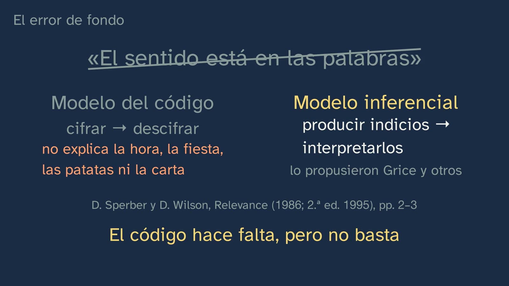
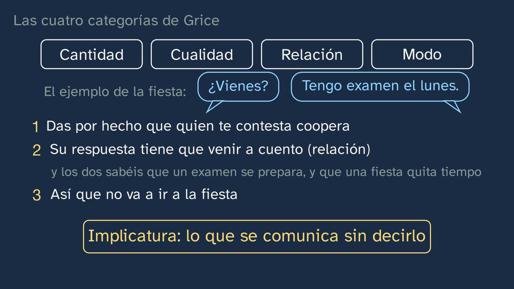
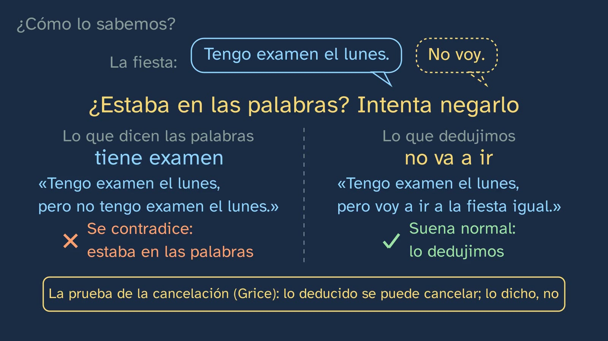
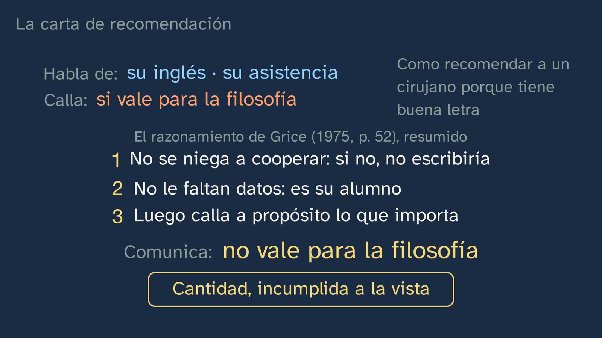
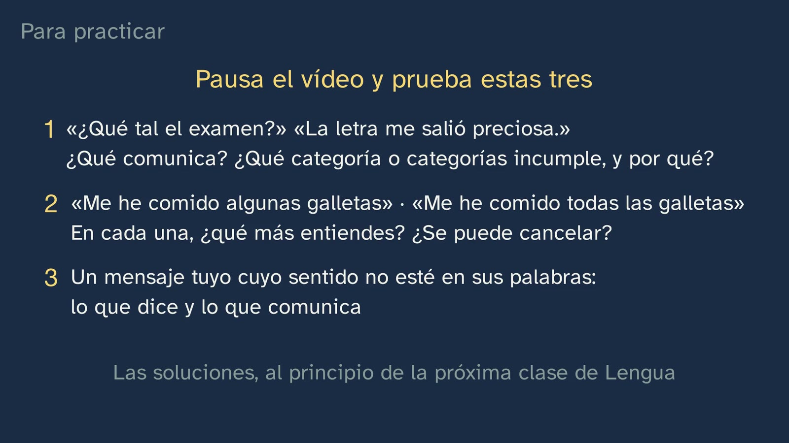

¿Tienes hora?
En pocas palabras
La clase abre la materia con una pregunta de cuatro sílabas: «¿Tienes hora?». Quien contesta «sí» y se calla ha respondido justo a lo que dicen las palabras y, sin embargo, algo falla. Para ver qué, Vera recupera el esquema de los elementos de la comunicación (emisor, receptor, mensaje, código, canal y contexto), lo aplica a esa pregunta y comprueba que todo funciona y la comunicación fracasa: descifrar no basta. Un segundo ejemplo, que el alumnado predice («¿Vienes a la fiesta del sábado?» — «Tengo examen el lunes»), deja a la vista la idea de todo el tema, con los dos términos del propio decreto: una cosa es el significado, lo que dicen las palabras, y otra el sentido, lo que comunican en su situación. El salto entre los dos es una inferencia. El centro de la clase es cómo se da ese salto: el principio de cooperación de Paul Grice, citado de su texto y con su página, sus cuatro categorías (cantidad, cualidad, relación y modo) y la implicatura, razonada en tres pasos. Después, tres pruebas de que no es sólo teoría: una conversación real del corpus ESLORA, en la que nadie dice «dame patatas»; la prueba de la cancelación («…pero voy a ir a la fiesta igual»), y un experimento con su predicción (Bott y Noveck, 2004): con menos de un segundo para contestar, «algunos elefantes son mamíferos» recibió más respuestas «verdadero» que con tres. El alumnado lo pone a prueba con la carta de recomendación de Grice, que calla lo único que importa, y con la ironía. El error de fondo se desmonta al final: creer que el sentido está en las palabras y que comunicar es sólo cifrar y descifrar. Y se enseña su cara peligrosa, con un anuncio inventado que hace entender lo que no dice.
Objetivo. Al terminar, el alumnado sabrá distinguir lo que dicen las palabras de un enunciado (su significado) de lo que comunica en su situación (su sentido), explicar con el principio de cooperación cómo se deduce lo que no se dice y comprobar con la prueba de la cancelación qué estaba en las palabras y qué se deducía.
Currículo
Real Decreto 243/2022, Lengua Castellana y Literatura I, materia común de 1.º de Bachillerato (texto consolidado del BOE, comprobado el 29–30/09/2026; su última actualización, del 02/07/2026, no toca el anexo de Lengua).
| Elemento | Qué dice el decreto | Dónde se trabaja |
|---|---|---|
| Saber básico (bloque B, «Comunicación», 1. Contexto) | «Componentes del hecho comunicativo: grado de formalidad de la situación y carácter público o privado; distancia social entre los interlocutores; propósitos comunicativos e interpretación de intenciones; canal de comunicación y elementos no verbales de la comunicación.» | Su centro: «propósitos comunicativos e interpretación de intenciones». Es toda la clase: qué quería quien pregunta la hora, quien contesta «tengo examen», quien escribe la carta. Los demás componentes (formalidad, distancia, canal, lo no verbal) llegan en las clases 3 a 5 |
| Saber básico (bloque B, 3. Procesos) | «Interacción oral y escrita de carácter formal. Tomar y dejar la palabra. Cooperación conversacional y cortesía lingüística.» | La cooperación conversacional, con su teoría: el principio de cooperación de Grice y sus cuatro categorías. La cortesía y el turno de palabra, en las clases 3 y 4 |
| Saber básico (bloque D, «Reflexión sobre la lengua») | «Elaboración de conclusiones propias sobre el funcionamiento del sistema lingüístico con un metalenguaje específico a partir de la observación, comparación y clasificación de unidades comunicativas y del contraste entre lenguas […]» | El método de la clase: observar enunciados, comparar lo que dicen con lo que comunican, manipularlos (la prueba de la cancelación) y nombrar lo que se ve con su metalenguaje: significado, sentido, inferencia, implicatura, máxima. El contraste entre lenguas llega en las clases 3 y 4 |
| Competencia específica 2 | «Comprender e interpretar textos orales y multimodales, con especial atención a los textos académicos y de los medios de comunicación, recogiendo el sentido general y la información más relevante, identificando el punto de vista y la intención del emisor y valorando su fiabilidad, su forma y su contenido, para construir conocimiento, para formarse opinión y para ensanchar las posibilidades de disfrute y ocio.» | Identificar la intención del emisor en enunciados orales: la hora, la fiesta, las patatas. La descripción de esta competencia da a la clase sus dos términos: comunicar es «un constante proceso de interpretación de intenciones en el que entran en juego el conocimiento compartido entre interlocutores y todos aquellos elementos contextuales y cotextuales que permiten ir más allá del significado del texto e interpretar su sentido» |
| Competencia específica 4 | «Comprender, interpretar y valorar textos escritos, con sentido crítico y diferentes propósitos de lectura, con especial atención a textos académicos y de los medios de comunicación, reconociendo el sentido global y las ideas principales y secundarias, integrando la información explícita y realizando las inferencias necesarias, identificando la intención del emisor, reflexionando sobre el contenido y la forma y evaluando su calidad y fiabilidad, para dar respuesta a necesidades e intereses comunicativos diversos y para construir conocimiento.» | Las inferencias, en dos textos escritos: la carta de recomendación y el anuncio. Su descripción avisa de lo que pasa sin ellas: el lector «queda limitado a la interpretación literal de lo dicho, incapaz de captar ironías, alusiones o dobles sentidos, o de calibrar la intención comunicativa del autor» |
| Competencia específica 9 | «Consolidar y profundizar en el conocimiento explícito y sistemático sobre la estructura de la lengua y sus usos, y reflexionar de manera autónoma sobre las elecciones lingüísticas y discursivas, con la terminología adecuada, para desarrollar la conciencia lingüística, para aumentar el repertorio comunicativo y para mejorar las destrezas tanto de producción oral y escrita como de comprensión e interpretación crítica.» | El conocimiento explícito de los usos, con su terminología. Su descripción pide integrar el nivel pragmático y un método: «la manipulación de enunciados, el contraste entre oraciones, la formulación de hipótesis y de reglas, el uso de contraejemplos». La prueba de la cancelación es eso mismo |
| Competencia específica 10 | «Poner las prácticas comunicativas al servicio de la convivencia democrática, la resolución dialogada de los conflictos y la igualdad de derechos de todas las personas, utilizando un lenguaje no discriminatorio y desterrando los abusos de poder a través de la palabra, para favorecer un uso no solo eficaz sino también ético y democrático del lenguaje.» | Sólo se asoma: el anuncio que hace entender lo que no dice y la pregunta abierta. La clase 2 vuelve a ello |
| Criterio 2.1 | «Identificar el sentido global, la estructura, la información relevante en función de las necesidades comunicativas y la intención del emisor en textos orales y multimodales complejos propios de diferentes ámbitos, analizando la interacción entre los diferentes códigos.» | Sólo una parte: la intención del emisor, en intercambios orales breves. Los textos complejos y la interacción entre códigos quedan para más adelante |
| Criterio 4.1 | «Identificar el sentido global, la estructura, la información relevante y la intención del emisor de textos escritos y multimodales especializados, con especial atención a textos académicos y de los medios de comunicación, realizando las inferencias necesarias y con diferentes propósitos de lectura.» | «Realizando las inferencias necesarias»: qué comunica la carta y qué quiere hacer entender el anuncio. La clase da la herramienta; los textos especializados llegan en la clase 6 |
| Criterio 9.2 | «Explicar y argumentar la interrelación entre el propósito comunicativo y las elecciones lingüísticas del emisor, así como sus efectos en el receptor, utilizando el conocimiento explícito de la lengua y un metalenguaje específico.» | Por qué alguien elige «tengo examen el lunes» en lugar de «no», o «algunos» en lugar de «todos», y qué efecto tiene en quien escucha. Los ejercicios 1 y 2 lo piden por escrito, con su metalenguaje |
| Criterio 10.1 | «Identificar y desterrar los usos discriminatorios de la lengua, los abusos de poder a través de la palabra y los usos manipuladores del lenguaje a partir de la reflexión y el análisis de los elementos lingüísticos, textuales y discursivos utilizados, así como de los elementos no verbales que rigen la comunicación entre las personas.» | Sólo «los usos manipuladores del lenguaje»: el anuncio inventado, analizado con las herramientas de la clase, y la pregunta abierta |
Lo que hay que traer de la ESO: poco, y conviene saber de dónde viene. El esquema que recupera la clase (emisor, receptor, mensaje, código, canal y contexto) no está en el decreto de la ESO: el Real Decreto 217/2022 no enumera esos elementos ni las funciones del lenguaje. Algunas comunidades sí concretan más: la ESO de Madrid pide en 2.º «Análisis de los componentes del hecho comunicativo. Funciones del lenguaje y tipos de textos» (Decreto 65/2022), y en 1.º de Bachillerato piden las funciones del lenguaje Madrid (Decreto 64/2022: «Las funciones del lenguaje. Las modalidades textuales»), Andalucía (Orden de 30 de mayo de 2023) y Castilla y León (Decreto 40/2022). En esta clase no se tratan; el canal decidirá con cuidado dónde van, sin encajarlas deprisa. Lo que pide, en los dos ciclos y con las mismas palabras que el de Bachillerato, son los «componentes del hecho comunicativo», entre ellos los «propósitos comunicativos e interpretación de intenciones»; en lectura, el criterio 4.1 ya habla de comprender «realizando las inferencias necesarias», y el 3.2, de «estrategias de cooperación conversacional y cortesía lingüística». El esquema llega al alumnado por la tradición escolar y por los libros: en nuestra revisión de los índices y las muestras públicas de quince proyectos editoriales de 1.º de Bachillerato (29–30/09/2026), diez abren el curso con «La comunicación» y siete de ellos repiten ese esquema. Por eso la clase lo da por conocido (lo recupera en 0:55), lo respeta y enseña dónde se queda corto. Lo nuevo en Bachillerato no son los saberes, que son casi los mismos, sino lo que el decreto llama «una mayor conciencia teórica y metodológica» y unos «instrumentos de análisis» (introducción de la materia): aquí, los de la pragmática.
Cómo está construida la clase
Capítulos del vídeo: 0:00 Qué vamos a ver · 0:55 Lo que ya sabes · 1:42 ¿Tienes hora? · 2:28 Lo que no se dice · 3:29 El principio de cooperación · 5:44 Una conversación de verdad · 6:27 ¿Cómo lo sabemos? · 9:06 La carta de recomendación · 10:36 El error de fondo · 11:46 Para practicar y seguir pensando
Algo más de trece minutos, en diez capítulos. Sigue las bases formativas del canal y lo que el decreto pide a esta materia en Bachillerato: que la profundización respecto a la ESO esté en «una mayor conciencia teórica y metodológica para analizar la realidad», con «instrumentos de análisis que ayuden a construir y a estructurar el conocimiento explícito sobre los fenómenos lingüísticos» (introducción de la materia). Por eso la clase no repasa el esquema de la comunicación: lo pone a prueba con un enunciado de cuatro sílabas, ve que no basta y da el instrumento que falta, con su autor, su texto y una prueba. Es la primera de las siete del tema; la tercera y la séptima son laboratorios de lengua, con datos reales de cómo hablamos.
| Capítulo | Qué pasa | Por qué así |
|---|---|---|
| Qué vamos a ver | Vera saluda y presenta el tema en el mapa de sus siete clases; dos son laboratorios de lengua (las comillas). El gancho, a cámara: «¿Tienes hora?». Si contestas «sí» y te callas, has contestado justo lo que dicen las palabras, y algo falla. | Saber dónde se está y adónde se va ordena lo que se aprende. El gancho es un enunciado que cualquiera ha usado: la teoría vendrá a explicar algo que el alumno ya sabe hacer. |
| Lo que ya sabes | ¿Cuáles eran los elementos de la comunicación? Pausa. Emisor, receptor, mensaje, código, canal y contexto. Se parece mucho al esquema de Roman Jakobson (1960), y detrás hay una idea: comunicar es cifrar un mensaje y descifrarlo. | Recuperar lo sabido, sin despreciarlo, y ponerle nombre a la idea que lleva dentro, para poder examinarla. |
| ¿Tienes hora? | El esquema, aplicado a la pregunta, que Vera pide imaginar por la calle: emisora, receptor, código, canal, contexto y mensaje, los seis en su sitio. Se descifra sin error, se contesta «sí», y la respuesta es verdadera… y fallida. No falta ninguna pieza, el código ha funcionado y la comunicación ha fallado. | El problema antes que la explicación: el alumno ve fallar la herramienta que tenía antes de recibir la nueva. |
| Lo que no se dice | «¿Vienes a la fiesta del sábado?» — «Tengo examen el lunes». ¿Sí o no? Pausa. En la respuesta no aparece «no» ni aparece la fiesta, y se entiende «no voy». La clave del tema: significado (lo que dicen las palabras) y sentido (lo que comunican en su situación). El salto entre los dos se llama inferencia. | Predecir antes de ver. Primero la intuición, con un ejemplo que se dice inventado; después, los dos términos del decreto. |
| El principio de cooperación | ¿Cómo damos ese salto? Paul Grice: al hablar, damos por hecho que el otro coopera. El principio, literal (1975, p. 45), y dicho fácil. Las cuatro categorías. La fiesta, razonada en tres pasos, hasta la implicatura. Y la hora: «sí» es verdad, pero incumple la cantidad. | Lo exacto, en palabras de su autor y con su página; la pizarra distingue la cita (azul, entre comillas) del resumen. Un ejemplo resuelto entero, paso a paso, con el ejemplo que el alumno ya conoce. |
| Una conversación de verdad | Tres universitarias de veinte años, grabadas mientras piden comida para el corpus ESLORA (Universidade de Santiago de Compostela). La que hace el pedido dice: «¡Ay! Yo no pedí patatas» — «De las mías te las doy» — «Bueno, te robo alguna, ¿vale?». Nadie ha dicho «dame patatas». | Lo que se ha visto con un ejemplo inventado, en palabras reales de hablantes reales, con su referencia y su licencia en pantalla. Anticipa los laboratorios de lengua. |
| ¿Cómo lo sabemos? | La prueba de la cancelación: lo que dicen las palabras no se puede negar sin contradicción («tengo examen, pero no tengo examen»); lo que se dedujo, sí («…pero voy a ir a la fiesta igual»). Y el laboratorio: «algunos elefantes son mamíferos», ¿verdadero o falso? Predicción, y los datos de Bott y Noveck (2004): 72 % de «verdadero» con menos de un segundo, 56 % con tres. En ese experimento, deducir llevó tiempo; si pasa siempre, no está claro. Vera, a cámara: lo importante hasta aquí. | La pregunta del canal, dos veces: con una prueba que el alumno puede hacer solo y con un experimento. La predicción va antes de los datos, y la conclusión, con su límite. |
| La carta de recomendación | El ejemplo de Grice (1975, p. 52): una carta para un puesto de filosofía que sólo habla del inglés y de la asistencia. ¿Qué dice del alumno como filósofo? Pausa. El razonamiento de Grice, resumido: cantidad, incumplida a la vista. La ironía hace lo mismo con la cualidad (p. 53, con un ejemplo adaptado). | Un ejemplo con huecos, que completa el alumno. Incumplir una máxima a la vista no es comunicar mal: es otra manera de comunicar. |
| El error de fondo | Creer que el sentido está en las palabras y que comunicar es sólo cifrar y descifrar. El esquema no está mal: lo que falla es creer que basta. Sperber y Wilson le pusieron nombre: el modelo del código, frente al modelo inferencial. Y su cara peligrosa: un anuncio inventado, «Ningún detergente lava más blanco que este», que es verdad aunque todos laven igual. | El error, planteado y desmontado con los cuatro casos que la clase ya ha visto. El anuncio enseña para qué sirve todo esto fuera del aula. |
| Para practicar y seguir pensando | Recapitulación, avisando de que se repite. Las cuatro categorías, como cuatro consejos para escribir. Tres ejercicios, la pregunta abierta (si alguien te hace creer algo falso diciendo sólo cosas verdaderas, ¿te ha mentido?) y el anuncio de la clase 2. Vera se despide con la frase que hay que recordar. | Práctica espaciada: las soluciones abren la clase siguiente. La pregunta abierta está también en los comentarios del vídeo. |
Puentes con otras materias. Filosofía: Grice es un filósofo del lenguaje, y la diferencia entre lo que se sigue de una frase por lógica y lo que sólo se da a entender es suya. Matemáticas: en lógica, «algunos» quiere decir «al menos uno», y puede ser todos. Historia del Mundo Contemporáneo: en su clase 1, Marc Bloch dice que a los historiadores les interesa de un documento «lo que nos deja entender, sin haber querido decirlo».

Plan de una sesión de 50 minutos
| Minutos | Qué se hace |
|---|---|
| 0–5 | Sin vídeo. En la pizarra: «—¿Tienes hora? —Sí.» (y quien contesta sigue andando). ¿Ha contestado bien? Cada cual lo escribe en una frase y la guarda para el final (está en la hoja). |
| 5–13 | Vídeo de 0:00 a 3:29. Parar en 1:07 (los elementos de la comunicación: medio minuto por escrito, y seguir para compararlo) y en 2:45 (¿sí o no?: a mano alzada, y una pregunta más, que es la buena: «¿en qué palabra de la respuesta te basas?»). |
| 13–21 | Vídeo de 3:29 a 6:27: Grice, las cuatro categorías, los tres pasos, la hora y las patatas. Al parar, en parejas: las tres primeras filas de la tabla de la hoja («Lo que se dice y lo que se comunica»). |
| 21–29 | Vídeo de 6:27 a 9:06: la prueba de la cancelación, los elefantes y Vera a mitad. Parar en 7:34 (¿verdadero o falso?: se vota a mano alzada y se apunta el recuento en la pizarra) y en 8:20 (la predicción, también a mano alzada). Después de los datos: ¿se parece nuestro recuento al del experimento? ¿Por qué no podemos concluir nada de una votación a mano alzada? |
| 29–41 | La actividad: el laboratorio de la cancelación. |
| 41–47 | Vídeo de 9:06 a 11:46: la carta (parar en 9:31 y contestar por escrito antes de oír a Grice), la ironía, el error de fondo y el anuncio. Completar la tabla de la hoja. |
| 47–50 | Vídeo de 11:46 al final (13:30). Releer la frase del principio: ¿la cambiarías? Los ejercicios, para casa con la hoja. |
Errores típicos y cómo se tratan
Con una advertencia honesta: casi ninguno está medido con alumnado español de Bachillerato. Del primero hay un estudio cercano, sobre la escritura; del tercero, experimentos con adultos y con niños; los demás son confusiones que el diseño prevé y que nadie, que sepamos, ha medido.
- «El sentido está en las palabras: comunicar es cifrar y descifrar». Es el error de fondo, y la clase lo trata de frente (10:36). Sperber y Wilson lo llamaron el modelo del código: «communication is achieved by encoding and decoding messages» (la comunicación se logra codificando y descodificando mensajes; Relevance, 2.ª ed., 1995, p. 2), y advierten de que la idea está tan arraigada que cuesta verla como una hipótesis (p. 6). Lo más cercano medido con alumnado español es sobre la escritura: en 1.º de Bachillerato, la concepción «reproductiva» (escribir es transmitir información) puntúa 4,04 sobre 6, y la «epistémica» (escribir es construir conocimiento), 4,24, con 163 alumnos (Villalón y Mateos, 2009; tesis de Villalón, 2010, tabla 6). La clase lo desmonta con cuatro casos que el esquema no explica (la hora, la fiesta, las patatas y la carta) y cuida la otra mitad: el código no sobra, no basta. Sperber y Wilson dicen lo mismo: «verbal communication involves both coding and inferential processes» (p. 3). Una objeción que saldrá, y es buena: «pero el contexto ya estaba en el esquema». Es verdad: el esquema nombra la situación, y en el capítulo «¿Tienes hora?» la pizarra lo comprueba con los otros cinco («Contexto: la calle») antes de concluir que «no falta ninguna pieza». La respuesta es que al esquema no le falta una casilla, sino un proceso: dice qué hace falta para comunicarse, no qué hacemos con ello. Lo que hacemos con la situación es razonar, y a eso la clase lo llama inferencia.
- «Si no lo ha dicho, no lo ha comunicado», y su contrario, «cada uno entiende lo que quiere». El primero es el lector literal del que avisa el decreto (competencia 4). El segundo aparece en cuanto se descubre la inferencia: si el sentido no está en las palabras, todo vale. No vale: para Grice, una implicatura tiene que poder razonarse («must be capable of being worked out», 1975, p. 50), y quien escucha se apoya en datos que los dos comparten: lo que significan las palabras, el principio de cooperación, el contexto y lo que ambos saben (p. 50). Por eso la clase razona la fiesta en tres pasos (4:40) y dice qué saben los dos: que un examen se prepara y que una fiesta quita tiempo. En la corrección, conviene pedir siempre el razonamiento, no sólo la conclusión.
- «"Algunos" significa "no todos"». Aquí el error no es entender «no todos», que es lo que hace cualquier hablante competente, sino creer que lo dice la palabra. La prueba de la cancelación lo muestra: «algunos elefantes son mamíferos; de hecho, todos» no es una contradicción (7:40). Es lo único de la clase con experimentos detrás: en el de Bott y Noveck (2004, experimento 4, en francés), con tres segundos para contestar, el 44 % de las respuestas a frases así fue «falso». Y una curiosidad que la clase deja fuera: ante «algunas jirafas tienen el cuello largo», el 89 % de los niños de 7 y 8 años la dio por buena, frente al 41 % de quince adultos (Noveck, 2001, experimento 3, en francés). No quiere decir que los niños no noten que la frase se queda corta: cuando Katsos y Bishop (2011) les dejaron elegir un premio intermedio, casi todos lo notaban; la toleraban. Buen puente con Matemáticas: en lógica, «algunos» es «al menos uno».
- «Las máximas son normas de buena educación: quien las incumple habla mal». La clase llama a las máximas «reglas» (4:05) y acaba convirtiendo las cuatro categorías en cuatro consejos para escribir (11:46), así que el malentendido es fácil. Grice no escribe un manual de estilo: describe lo que damos por hecho para poder interpretarnos. Distingue varias maneras de no cumplir una máxima (1975, p. 49): incumplirla sin que se note, con lo que se puede engañar («he will be liable to mislead»); salirse de la cooperación («opt out»: «no puedo decir más»); un choque entre dos máximas, e incumplirla a la vista («flout») para comunicar algo. La carta y la ironía son de esta última clase: no comunican a pesar de incumplir, sino porque incumplen a la vista. Y quien las escribe sigue cooperando: «though some maxim is violated at the level of what is said, the hearer is entitled to assume that that maxim, or at least the overall Cooperative Principle, is observed at the level of what is implicated» (aunque se incumpla una máxima en lo que se dice, el oyente puede suponer que se cumple, o al menos el principio de cooperación, en lo que se implica; p. 52). Cooperar, además, no es ser amable ni estar de acuerdo: la cortesía es otra cosa, y llega en la clase 4.
- Confundir la inferencia de la conversación con la deducción de la lógica. El vídeo usa «deducir» en su sentido corriente, el primero del diccionario académico («sacar una conclusión de algo», con el ejemplo «¿Qué podemos deducir de sus palabras?»). En Filosofía y en Matemáticas el alumnado oirá «deducir» en sentido estricto (la tercera acepción: «extraer una verdad particular a partir de un principio general»), y ahí pasa lo contrario de lo que dice el resumen de la clase: lo que se deduce de verdad no se puede cancelar. Si todos los elefantes son mamíferos, algunos lo son, y no hay «pero» que valga. La implicatura es justo la inferencia que sí admite el «pero»: probable, razonable y revisable. El vídeo da el contraste sin nombrarlo (7:40: «en lógica» frente a «en la conversación»). En el aula conviene usar «inferir» e «inferencia», que son además las palabras del decreto («realizando las inferencias necesarias»), y decirlo una vez: de «todas» a «algunas» se va por lógica; de «algunas» a «no todas», por conversación. El ejercicio 2 lo pone a prueba.
- «La ironía es decir lo contrario», o «quien ironiza miente». La clase da la explicación de Grice y la atribuye («así la explicó Grice», 10:13): quien ironiza dice algo que él y su oyente saben que no cree, y se entiende otra cosa; la más obvia, su contradictoria (1975, p. 53). No es una mentira, porque quien miente esconde que no cree lo que dice, y quien ironiza lo enseña. Y no es toda la historia: quien ironiza hace algo más que querer decir lo contrario. El propio Grice reconoció después que finge afirmar lo que dice y que expresa algo más que incredulidad; Sperber y Wilson lo llaman una actitud de distancia («dissociative attitude»), irónica, escéptica, amarga o burlona (lo resume W. Davis en la Stanford Encyclopedia of Philosophy, «Implicature», §12). Basta con que el alumnado no salga creyendo que toda ironía se resuelve dándole la vuelta a la frase.

Preguntas y soluciones
Para y piensa (dentro del vídeo)
- ¿Cuáles eran los elementos de la comunicación? (0:55; la pausa, en 1:07) Los del vídeo: emisor (quien habla), receptor (quien escucha), mensaje (lo que se dice), código (la lengua que comparten), canal (por donde viaja: el aire, una pantalla) y contexto (la situación). Valen también las listas de siete, que separan el «referente» (aquello de lo que se habla) de la «situación»: según el libro con el que aprendieran, «contexto» es una cosa, la otra o las dos. El esquema «se parece mucho» al de Jakobson, y no es igual: sus seis factores son emisor, destinatario, mensaje, contexto, código y contacto, y su «contexto» es aquello a lo que el mensaje se refiere, no la situación («a CONTEXT referred to»; Jakobson, 1960, p. 353). Un matiz para el profesorado: cuando el vídeo dice «por eso se le llama el modelo del código», lo que recibe ese nombre es la idea de que comunicar es cifrar y descifrar, no el esquema de Jakobson, que también cuenta con el contexto.
- «¿Tienes hora?» — «Sí». ¿Qué falla? (1:42) El esquema no lo explica: se descifra sin error y la respuesta es verdadera. La clase lo resuelve en 5:17: «sí» da menos información de la que hace falta (cantidad); por eso quien contesta sólo «sí», o no ha entendido qué le pedían, o no quiere cooperar, o bromea. El vídeo explica por qué falla la respuesta, pero da por sabido qué hacía falta. El paso que queda implícito, por si alguien lo pregunta, es el mismo de la fiesta: quien pregunta coopera; preguntarle a alguien si lleva hora, sólo por saberlo, no vendría a cuento (relación); luego pregunta por algo más: quiere que se la digan. Cómo una pregunta puede valer por una petición es la clase 2. Dos detalles para quien quiera afinar. Uno: el código solo ni siquiera decide qué dicen las palabras, porque «hora» es también la cita («pedir hora», «dar hora», en el diccionario académico): en la sala de espera del dentista, «¿tienes hora?» pregunta otra cosa. Dos: la pizarra pone «el aire» como canal y «la calle» como contexto, porque Vera pide imaginar que hace la pregunta por la calle, cara a cara; entre ella y quien ve el vídeo, el canal es una pantalla.
- «¿Vienes a la fiesta del sábado?» — «Tengo examen el lunes». ¿Eso es un sí o es un no? (2:28; la pausa, en 2:45) Lo natural es entender que no, y el vídeo lo dice con cuidado: «si has entendido que no va a ir». La respuesta habla de un examen y de un lunes; no aparece «no» ni aparece la fiesta (2:50). Las mejores respuestas no se quedan en «es un no»: dicen de dónde lo sacan («un examen se prepara», «una fiesta quita tiempo») o notan que no es seguro («podría añadir: pero voy igual»). Esa segunda observación es la prueba de la cancelación antes de tiempo: merece decirlo. El ejemplo es inventado, y la pizarra lo dice.
- ¿Cómo damos ese salto? (3:29) Con el principio de cooperación: «Make your conversational contribution such as is required, at the stage at which it occurs, by the accepted purpose or direction of the talk exchange in which you are engaged» (Grice, 1975, p. 45); en el vídeo, en traducción nuestra: «Haz que tu contribución a la conversación sea la que se requiere, en el momento en que se produce, según el propósito o la dirección aceptados del intercambio en que participas». Los tres pasos de la fiesta (4:40): 1) das por hecho que quien te contesta coopera; 2) si coopera, su respuesta tiene que venir a cuento (relación), y los dos sabéis que un examen se prepara y que una fiesta quita tiempo de estudio; 3) luego no va a ir. Eso que se comunica sin decirlo es una implicatura. Las cuatro categorías, como las resume la pizarra (4:05): cantidad (tan informativa como haga falta, y no más), cualidad (no digas lo que crees falso ni aquello de lo que no tienes pruebas suficientes), relación (sé pertinente) y modo (sé claro: sin oscuridad ni ambigüedad, breve y ordenado). Otros manuales dicen «calidad» y «manera» (así, el diccionario del Centro Virtual Cervantes): son las mismas. Y si alguien ha leído que Grice era «americano», como dice ese mismo diccionario: nació en Birmingham en 1913 y enseñó en Oxford antes de irse a Berkeley.

- ¿Y esto pasa en conversaciones de verdad? (5:44) En el vídeo, tres intervenciones: «¡Ay! Yo no pedí patatas» — «De las mías te las doy» — «Bueno, te robo alguna, ¿vale?». Lo que dicen las palabras de la primera: que no pidió patatas. Lo que entiende su amiga, a juzgar por lo que hace: que le apetecen; y le ofrece de las suyas. Nadie ha dicho «dame patatas». Con Grice: si lo dice, será por algo (relación). Conviene que el profesorado conozca el fragmento entero, porque un dato real es menos limpio que un ejemplo inventado, y eso también enseña. Es la transcripción literal del corpus, con las marcas de pausa y de risa entre paréntesis:
| Línea | Hablante | Dice |
|---|---|---|
| 85 | hab2 | ¡ay! yo no pedí patatas |
| 86 | hab1 | ¡tía! (alargado, entre risas) |
| 87 | hab3 | de las mías (pausa) te las doy |
| 88 | hab2 | espérate |
| 89 | hab1 | (risa) |
| 90 | hab2 | bueno te robo alguna ¿vale? |
| 91 | hab2 | ¿vale tía? |
| 92 | hab3 | no no (pausa) a mitas ¿eh? |
| 93 | hab2 | vale a medias (pausa larga) vale |
| 94 | hab3 | yo pico alguna porque si me las pones delante pues voy a querer |
| 95 | hab2 | vale perfecto (pausa) vale |
| 98 | hab2 | no no (pausa) las pido |
Fragmento ajeno, que no entra en la licencia CC BY de esta ficha: ESLORA: Corpus para el estudio del español oral http://eslora.usc.es, versión 2.5 de enero de 2026, ISSN: 2444-1430; conversación SCOM_C_64 (Galicia, 14/02/2020; tres informantes, mujeres, de 20 años, con estudios universitarios), líneas 85–95 y 98 del fichero de contenido. Licencia CC BY-NC 4.0: se puede usar en el aula, sin fines comerciales y citando el corpus.
Tres cosas se ven aquí mejor que en el vídeo, que simplifica la transcripción y lo avisa en pantalla. Una, que el vídeo sólo apunta («mientras piden comida. La que hace el pedido dice…»): las tres están haciendo un pedido de comida, y quien habla primero (hab2) es la que lo tramita: antes ha preguntado «¿qué patatas queréis? es que solo me aparecen clásicas» (línea 5) y dice, como quien lee de una pantalla, «añadir el pedido» (líneas 14 y 82, que el corpus marca como cita); en la línea 85, por lo que se ve, cae en la cuenta de que no ha pedido patatas para ella. La que ofrece las suyas (hab3) las había aceptado a regañadientes: «para mí sola no» (línea 11). Dos, que el vídeo quita: entre el ofrecimiento y el «te robo alguna» hay un «espérate». Tres, que el vídeo no cuenta: la cosa no acaba ahí: la amiga contesta «no, no, a mitas» (a medias), y la primera termina decidiendo «no, no, las pido».
¿Cambia el análisis? Lo esencial se mantiene: de «yo no pedí patatas», la amiga infiere «le apetecen», y acierta. Lo que no se puede afirmar es que la primera quisiera pedírselas a su amiga con esa frase: el «¡ay!», el «espérate» y el «las pido» apuntan más bien a que hablaba de su propio despiste. La distinción es de Grice: una implicatura es lo que quien habla quiere comunicar contando con que el otro lo razone (1975, pp. 49–50); lo que el oyente infiere por su cuenta puede ir más allá. El vídeo es prudente y no dice qué quería la primera, sino cómo lo tomó la segunda («lo ha tomado como un "me apetecen"»). Es una buena pregunta para el aula: ¿le estaba pidiendo patatas, o sólo se lamentaba? ¿Qué datos apoyan cada lectura?

- ¿Cómo sabemos que ese «no voy» no estaba en las palabras? (6:27) Con la prueba de la cancelación: se intenta negar, y se mira si hay contradicción. «Tengo examen el lunes, pero no tengo examen el lunes» se contradice: que tiene examen estaba en las palabras. «Tengo examen el lunes, pero voy a ir a la fiesta igual» suena normal: el «no voy» se había deducido. La prueba es de Grice: una implicatura se puede cancelar añadiendo una cláusula (1975, p. 57), y en 1978 la formula como la usa la clase: añadir «pero no p» (pp. 115–116). Dos precisiones para el profesorado. La primera: Grice avisó de que la prueba no es infalible; no considera que superarla establezca «de manera decisiva» que hay una implicatura (1978, p. 116, citado por Walczak, 2016), porque a veces hablamos de manera laxa y también lo dicho parece cancelarse. Es un buen indicio, no una demostración. La segunda: «sonar normal» quiere decir «sin contradicción», no «sin esfuerzo». Quien cancela una implicatura suele tener que dar explicaciones («…voy a ir igual, que ya lo llevo estudiado»), precisamente porque había dado a entender lo contrario.

- «Algunos elefantes son mamíferos». ¿Verdadero o falso? (7:26; la pausa, en 7:34) Las dos respuestas se pueden defender, y eso es lo interesante. En lógica es verdadero: todos los elefantes son mamíferos, así que algunos también. Quien contesta «falso» no sabe menos de elefantes: ha entendido «algunos, pero no todos», que es lo que se da a entender al elegir «algunos» pudiendo decir «todos» (cantidad). Y se cancela: «algunos elefantes son mamíferos; de hecho, todos».
- Con menos tiempo para contestar, ¿habrá más respuestas «verdadero» o más «falso»? (8:05; la pausa, en 8:20) Más «verdadero». Bott y Noveck (2004, experimento 4): 45 estudiantes de la Universidad Lyon 2, en francés (con certains por «algunos»), juzgaron 54 frases que veían palabra a palabra; 20 tenían 900 milisegundos para contestar y 25, tres segundos. A frases como «algunos elefantes son mamíferos», el 72 % de las respuestas del primer grupo fue «verdadero»; en el segundo, el 56 %. Son porcentajes de las respuestas dadas a tiempo (quedó fuera de plazo un 12 % con el plazo corto y un 0,7 % con el largo) y de dos grupos de personas distintas; la pizarra lo dice. La diferencia es fiable según los autores (t(43) = 2,43; p = 0,019, a una cola) y no se dio en las frases de control, como «algunos mamíferos son elefantes» o «todos los elefantes son mamíferos», que con más tiempo se acertaron igual o más. Lo que se puede concluir: en este experimento, con prisa se hizo menos la inferencia. Lo que no: que inferir cueste siempre más que entender lo literal. El experimento se diseñó para enfrentar dos explicaciones (que la inferencia salta sola, por defecto, o que cuesta esfuerzo y depende del contexto, como sostiene la teoría de Sperber y Wilson), y la cuestión sigue abierta: «conclusive evidence is not yet found» (Schaeken, Van Haeren y Bambini, 2018). Predecir «más falso» no es un disparate: es apostar por la otra explicación.

- ¿Qué dice la carta del alumno como filósofo? (9:06; la pausa, en 9:31) Decir, no dice nada: habla de su inglés y de su asistencia a las tutorías. Comunica que no vale para la filosofía. El razonamiento de Grice: quien escribe «cannot be opting out, since if he wished to be uncooperative, why write at all? He cannot be unable, through ignorance, to say more, since the man is his pupil; moreover, he knows that more information than this is wanted. He must, therefore, be wishing to impart information that he is reluctant to write down» (no se está negando a cooperar, porque entonces no escribiría; no le faltan datos, porque es su alumno, y sabe que se espera más; así que quiere comunicar algo que prefiere no poner por escrito; 1975, p. 52). Grice la clasifica como un incumplimiento a la vista de la primera máxima de cantidad. Vale también quien diga «relación» y lo razone (el inglés no viene a cuento para un puesto de filosofía): lo que importa es ver que el incumplimiento es visible y deliberado. Una precisión de vocabulario: el vídeo contesta «Nada… y lo dice todo». Con los términos de la propia clase, la carta no dice nada del filósofo y lo comunica todo; es buen momento para que el alumnado lo note. Y se puede pasar la prueba: «…y además es un filósofo brillante» cancelaría la implicatura sin contradicción.

- La ironía: «Es un buen amigo» (10:13) Pedro ha contado a otra persona un secreto de Ana, y Ana dice de él: «Es un buen amigo». Dice algo que ella y quien la escucha saben que no cree (cualidad, incumplida a la vista), y se entiende lo contrario. El ejemplo es de Grice, adaptado: en el original, X ha revelado un secreto de A a un rival en los negocios, y A dice «X is a fine friend» (1975, p. 53).
- «Ningún detergente lava más blanco que este». ¿Qué quiere que entiendas? (11:21) Que este lava más blanco que todos. Pero sólo dice que ninguno lava más blanco que él, y eso es verdad también si todos lavan igual. El anuncio es inventado, y se dice. Una vuelta más, para el alumnado que vaya sobrado: con el razonamiento de los elefantes, el anuncio da a entender lo contrario de lo que pretende. Si el anunciante pudiera decir «es el que más blanco lava», lo diría (cantidad); si se conforma con «ninguno lava más blanco», será que no puede decir más. La defensa contra el anuncio es la misma herramienta de la clase, usada despacio.
De la hoja del alumnado
- Antes de empezar: ¿ha contestado bien quien dice «sí» y sigue andando? No hay respuesta correcta: es su punto de partida. Al final la releen y la reescriben con las palabras de la clase. Una buena revisión: «Ha contestado a lo que dicen las palabras (el significado), no a lo que se le pedía (el sentido). Si coopera, tiene que dar la información que hace falta: la hora».
- Mientras ves el vídeo. Son los «para y piensa» de arriba, en el orden del vídeo.
- Lo que se dice y lo que se comunica. «¿Tienes hora?»: dice una pregunta sobre si llevas hora; comunica «dime qué hora es»; se sabe porque preguntarlo sólo por saberlo no vendría a cuento (relación). «Tengo examen el lunes»: dice que tiene un examen ese día; comunica que no va a la fiesta; relación, más lo que los dos saben. «¡Ay! Yo no pedí patatas»: dice que no las pidió; su amiga entiende que le apetecen; «si lo dice, será por algo». La carta: dice que su inglés es excelente y que ha ido a las tutorías; comunica que no vale para la filosofía; cantidad, incumplida a la vista. «Es un buen amigo»: dice que lo es; comunica que no lo es; cualidad, incumplida a la vista, porque las dos saben lo del secreto. El anuncio: dice que ningún otro lava más blanco; quiere comunicar que este lava más blanco que los demás; no se sigue de las palabras, que son verdad también si todos lavan igual. Merece la pena valorar a quien escribe en la última columna un razonamiento y no sólo el nombre de una categoría.
- La prueba de la cancelación. Las seis frases son inventadas para esta hoja. 1) «Tengo examen el lunes, pero voy a ir a la fiesta igual»: normal; era una implicatura. 2) «He hecho algunos ejercicios; de hecho, los he hecho todos»: normal, aunque obliga a preguntarse por qué dijo «algunos»; implicatura de cantidad, como la de los elefantes. 3) «He aprobado todas las asignaturas, pero no he aprobado Lengua»: contradicción, si Lengua es una de sus asignaturas; estaba en las palabras. 4) «Las palomitas estaban buenísimas, y la película también»: normal; era una implicatura (contesta a «¿qué tal la película?» con menos de lo que se pide). 5) «Ningún detergente lava más blanco que este; todos lavan igual»: normal; el anuncio no lo había dicho. 6) «Mi hermano está soltero, pero está casado»: contradicción; está en el significado de «soltero». Los ítems 3 y 6 son los que más enseñan: no todo lo que se entiende es una implicatura. Y el 5 abre la pregunta final: quien engaña con una implicatura siempre puede decir «yo eso no lo he dicho».
- Una frase, cuatro situaciones. Es la actividad opcional (ver abajo, con sus respuestas).
Para practicar (las soluciones abren la clase 2)
Los tres ejercicios admiten más de una buena respuesta. Van la solución esperada, las otras que valen y los criterios.
- «¿Qué tal el examen?» — «La letra me salió preciosa». ¿Qué comunica esa respuesta, qué categoría o categorías incumple, y por qué? Comunica que el examen le salió mal, o al menos que no tiene nada bueno que decir de lo que importa. Es la carta de Grice con otro traje (y la letra del cirujano del vídeo). Cantidad: da menos información de la que pide la pregunta, porque del contenido del examen no dice nada. Relación: la letra no viene a cuento de cómo salió el examen. Las dos respuestas valen si están razonadas, y por eso el enunciado dice «categoría o categorías»; la que sigue a Grice es la cantidad (1975, p. 52). No vale «cualidad»: no hay por qué pensar que miente sobre su letra. El porqué, en tres pasos: coopera, porque contesta; no le faltan datos, porque es su examen; luego calla a propósito lo que importa, y a la vista, para que se note. Criterios: separa lo que dice de lo que comunica; nombra una categoría y la justifica; explica que el incumplimiento es visible y deliberado; y, para una nota alta, pasa la prueba de la cancelación («La letra me salió preciosa, y lo demás también» suena normal: era una implicatura) o imagina una situación en la que no habría implicatura (un examen de caligrafía). Ejemplo: «Dice que tiene buena letra; comunica que el examen le fue mal. Incumple la cantidad, porque le preguntan por el examen y sólo habla de lo menos importante, y lo hace adrede para que el otro lo note».
- «Me he comido algunas galletas» y «Me he comido todas las galletas». En cada frase, ¿qué más entiendes? ¿Lo puedes cancelar? «Algunas»: se entiende «no todas». Se puede cancelar: «Me he comido algunas galletas; de hecho, todas» no se contradice (suena a confesión por entregas, pero no es un disparate). Es una implicatura de cantidad, la misma de los elefantes. «Todas»: aquí el enunciado es más abierto de lo que parece, y hay que prever varias respuestas. La esperada: se entiende que también se ha comido algunas, o que no queda ninguna, y eso no se puede cancelar («Me he comido todas las galletas, pero no me he comido algunas» y «…pero queda alguna» se contradicen): no es una implicatura, se sigue de las palabras. Es el contraste que busca el ejercicio: de «todas» a «algunas» se va por lógica; de «algunas» a «no todas», por conversación. Pero también vale quien entienda otra cosa de «todas» (que confiesa, que se disculpa, que ya no hay para ti, que estaban buenas) y muestre que eso sí se cancela («…pero hay otro paquete en el armario»): son implicaturas de verdad. Criterios: en cada frase, qué más se entiende, dicho con precisión; la prueba, escrita entera («…pero…», «…de hecho…»); el veredicto (contradicción o no) y lo que se concluye de él; y, para una nota alta, explicar por qué «algunas» deja entender «no todas» (si pudiera decir «todas», lo diría).
- Busca en tus mensajes uno tuyo cuyo sentido no esté en sus palabras, y escribe lo que dice y lo que comunica. Es abierta, y por eso la clase 2 no podrá dar «la» solución, sino un modelo y unos criterios: el mensaje es propio (nunca de otra persona) y está copiado tal cual; lo que dice, separado de lo que comunica; qué saben los dos para que se entienda (la situación); y, para una nota alta, la categoría que entra en juego o la prueba de la cancelación. Un ejemplo inventado de buena respuesta: «Le escribí a mi hermana: "Mamá ya ha visto las notas". Lo que dice: que nuestra madre ha visto las notas. Lo que comunica: "prepárate". Se entiende porque las dos sabemos que las suyas son peores que otras veces. Se puede cancelar: "…pero no ha dicho nada"». Un cuidado: basta con copiar el mensaje propio; no hace falta enseñar la conversación ni decir a quién se escribía. Y un matiz: en rigor, el sentido nunca está del todo en las palabras; lo que se busca es un mensaje en el que el salto se vea bien.

Para seguir pensando. Si alguien te hace creer algo falso diciendo sólo cosas verdaderas, como haría ese anuncio si todos lavaran igual, ¿te ha mentido? No tiene respuesta de libro, y ni el vídeo ni esta ficha dan la suya. Algunas pistas para orientar el debate sin cerrarlo:
- Las dos posturas, con su mejor argumento. Para la definición más extendida, no ha mentido: mentir es afirmar algo que uno no cree, con la intención de que el otro lo crea («a lie is a statement made by one who does not believe it with the intention that someone else shall be led to believe it», Isenberg, 1973); quien dice la verdad para engañar hace otra cosa, que tiene sus nombres: una implicatura falsa, inducir a error. Para otros, sí ha mentido: si lo que cuenta es lo que uno quiere hacer creer, quien implica a sabiendas algo falso miente aunque cada palabra sea verdadera (así lo defiende J. Meibauer). Las dos posturas, con sus autores, están en la Stanford Encyclopedia of Philosophy, «The Definition of Lying and Deception».
- La herramienta de la clase. Lo que se implica se puede cancelar. Por eso quien engaña con una implicatura conserva una salida: «yo eso no lo he dicho». ¿Esa salida lo hace menos responsable, o más?
- Separar dos preguntas. Una es de palabras: ¿a eso se le llama mentir? Otra es de valores: se llame como se llame, ¿está igual de mal? Grice describe las dos maneras: quien incumple una máxima sin que se note puede engañar (1975, p. 49), y lo dicho puede ser verdadero mientras lo implicado es falso (p. 58).
- Un dato, no una opinión. La ley española no necesita decidir si es una mentira: considera engañosa la conducta que contenga información falsa «o información que, aun siendo veraz, por su contenido o presentación induzca o pueda inducir a error a los destinatarios» (Ley 3/1991, de Competencia Desleal, artículo 5.1). Si un anuncio concreto cae ahí lo deciden los tribunales, no esta ficha. El profesor modera y no da su veredicto.
Una actividad para el aula
El laboratorio de la cancelación (unos 12 minutos, en parejas, después de ver el vídeo hasta 9:06; trabaja el criterio 9.2 y el método que pide la competencia 9: manipular enunciados y buscar contraejemplos).
Material: la hoja del alumnado (su apartado «La prueba de la cancelación»). Las seis frases son inventadas para esta ficha.
- Qué se entiende (2 minutos). Cada pareja lee las seis frases con lo que «se entiende» de cada una y marca, antes de hacer ninguna prueba, su apuesta: ¿está en las palabras o se deduce?
- La prueba (5 minutos). Para cada frase escriben la continuación que niega lo que se entiende («…pero…», «…de hecho…») y la leen en voz alta. ¿Se contradice (C) o suena normal (N)? Conviene insistir en que la escriban entera: la prueba se hace con el oído.
- El razonamiento (3 minutos). De las que suenan normal, eligen una y la razonan en tres pasos, como la fiesta: coopera; luego lo que dice tiene que ser lo que hace falta, y venir a cuento; luego…
- Puesta en común (2 minutos). En la pizarra, dos columnas: «estaba en las palabras» (3 y 6) y «era una implicatura» (1, 2, 4 y 5). Y una pregunta para cerrar: en la número 5, ¿quién puede decir «yo eso no lo he dicho»?
Para el profesorado: las soluciones están en «De la hoja del alumnado». Saldrán dudas con la número 2 («si los ha hecho todos, ¿por qué dice "algunos"?»): es la pregunta correcta, y su respuesta es la máxima de cantidad. Si alguna pareja encuentra un caso en el que la prueba no decide, tiene razón y está en buena compañía: el propio Grice avisó de que no es infalible.
Otra opción: una frase, cuatro situaciones (10 minutos, en parejas; trabaja el saber B.1, los componentes del hecho comunicativo). La misma frase, «Son las once», en cuatro situaciones de la hoja: te han preguntado la hora por la calle; tu madre, cuando entras en casa, si habíais quedado en que volvías a las diez; una alumna a su profesora, si la clase acababa a las once; y una cuarta que inventa cada pareja. Para cada una: qué comunica, y qué saben los dos para que se entienda. Respuestas: en la primera, sólo informa (y contesta a una petición); en la segunda, reprocha («llegas tarde»), y se entiende porque los dos saben la hora pactada; en la tercera, pide («hay que terminar»), y se entiende porque las dos saben el horario; la forma indirecta tiene que ver, además, con quién habla a quién, que es el tema de las clases 3 y 4. Lo que dicen las palabras es lo mismo las tres veces, y aun eso necesita la situación: ni siquiera dicen si son las once de la mañana o de la noche. Criterios: el sentido, distinto en cada situación y bien formulado; el conocimiento compartido, dicho de manera explícita; y una cuarta situación en la que la frase comunique algo nuevo.
Otra opción: la conversación entera (15 minutos, con todo el grupo; para quien quiera adelantar el método de los laboratorios de lengua). Se proyecta el fragmento literal de ESLORA de esta ficha (con su referencia y su licencia a la vista) junto a las tres intervenciones del vídeo. Primero, la hipótesis, antes de leer: «con "yo no pedí patatas", la primera le está pidiendo patatas a su amiga». Después, los datos: ¿qué intervenciones la apoyan? (el ofrecimiento, «te robo alguna»). ¿Cuáles la ponen en duda? («¡ay!», «espérate», «las pido»). Y la conclusión, con lo que no se puede concluir: sabemos qué entendió la amiga, porque lo vemos en lo que hace; qué quería la primera sólo lo podemos razonar. Es la diferencia entre un ejemplo inventado, en el que el autor decide qué quiere cada personaje, y un dato real.
Lo que la clase deja fuera, y por qué
Una clase de trece minutos sobre Grice deja fuera más de lo que cuenta. Esto es lo que un profesor puede echar de menos, y la razón.
- Que lo que se dice también necesita contexto. La clase opone «lo que dicen las palabras» a «lo que comunican en su situación». Para Grice, lo dicho ya depende de la situación: para saber qué ha dicho alguien hay que saber de quién habla, cuándo lo dice y en cuál de sus sentidos usa una expresión ambigua (1975, p. 44). «Tengo examen el lunes» no dice, sin situación, ni quién tiene el examen ni qué lunes. Se deja fuera para que quede una sola distinción, la que pide el decreto, y se puede añadir cuando esté firme.
- Los términos. «Significado» y «sentido» son los del decreto (competencia 2). La pragmática usa también otros pares: lo dicho y lo implicado (Grice), el significado de la oración y el del hablante. Y un aviso para cuando el alumnado llegue a Filosofía: allí «sentido» puede querer decir otra cosa.
- Los tipos de implicatura. Grice distingue las convencionales, que van pegadas a una palabra (su ejemplo: «es inglés; por lo tanto, es valiente», pp. 44–45), de las conversacionales, y dentro de estas, las que dependen de una situación concreta (la fiesta, la carta) de las generalizadas, que acompañan casi siempre a una expresión (el «algunos» de los elefantes; pp. 56–57). La clase dice «implicatura» a secas, siempre por la conversacional.
- La teoría de la relevancia. De Sperber y Wilson la clase toma los nombres de los dos modelos, no su propia teoría, que propone sustituir las máximas de Grice por un solo principio de relevancia (Stanford Encyclopedia of Philosophy, «Implicature», §12). El experimento de los elefantes se hizo, precisamente, para ponerla a prueba.
- Los actos de habla y la cortesía. Por qué «¿tienes hora?» vale por una petición es la clase 2. Por qué se rechaza una invitación con una excusa en lugar de con un «no» es la clase 4.
- Los niños y el «algunos». Los datos de Noveck (2001) y de Katsos y Bishop (2011) están en el error 3. Se dejan fuera del vídeo porque alargan la clase y necesitan su matiz para no engañar.
- La ironía, más allá de «lo contrario». Está en el error 6.
Fuentes
- Real Decreto 243/2022, anexo II, Lengua Castellana y Literatura, texto consolidado (BOE): https://www.boe.es/buscar/act.php?id=BOE-A-2022-5521.
- La ESO: Real Decreto 217/2022, texto consolidado (BOE), Lengua Castellana y Literatura en el anexo II: https://www.boe.es/buscar/act.php?id=BOE-A-2022-4975.
- H. P. Grice (1975). Logic and Conversation. En P. Cole y J. L. Morgan (eds.), Syntax and Semantics 3: Speech Acts, Academic Press, pp. 41–58 (de sus William James Lectures, Harvard, 1967): lo dicho, p. 44; el principio de cooperación y las categorías, pp. 45–46; las maneras de no cumplir una máxima, p. 49; cómo se razona una implicatura, p. 50; la carta, p. 52; la ironía, p. 53; la cancelación, p. 57. Reimpreso en Studies in the Way of Words, Harvard University Press, 1989, pp. 22–40. En español: «Lógica y conversación», en L. M. Valdés Villanueva (ed.), La búsqueda del significado, Tecnos, 1991, pp. 511–530. No pudimos consultar esa traducción: las de la clase y las de esta ficha son nuestras, cotejadas con el original.
- H. P. Grice (1978). Further Notes on Logic and Conversation. En P. Cole (ed.), Syntax and Semantics 9: Pragmatics, Academic Press, pp. 113–127. Citado a través de G. Walczak (2016). On explicatures, cancellability and cancellation. SpringerPlus 5, 1115: https://pmc.ncbi.nlm.nih.gov/articles/PMC4949192/.
- W. Davis, «Implicature», y R. Grandy y R. Warner, «Paul Grice», Stanford Encyclopedia of Philosophy: https://plato.stanford.edu/entries/implicature/ y https://plato.stanford.edu/entries/grice/.
- D. Sperber y D. Wilson (1986; 2.ª ed., 1995). Relevance: Communication and Cognition. Blackwell, pp. 2, 3 y 6 de la 2.ª edición. En español: La relevancia, Visor, 1994.
- R. Jakobson (1960). Closing Statement: Linguistics and Poetics. En T. A. Sebeok (ed.), Style in Language, MIT Press, pp. 350–377 (los factores de la comunicación, p. 353). En español: «Lingüística y poética», en Ensayos de lingüística general, Seix Barral, 1975.
- ESLORA: Corpus para el estudio del español oral http://eslora.usc.es, versión 2.5 de enero de 2026, ISSN: 2444-1430 (Grupo de investigación Gramática del español, Universidade de Santiago de Compostela), conversación SCOM_C_64. Se consulta y se descarga gratis y sin registro. El contenido de su web se ofrece con licencia CC BY-NC 4.0 (https://eslora.usc.es/terms); el fichero de texto descargable, en el que hemos comprobado las líneas citadas, se distribuye además con la licencia LGPL-LR.
- L. Bott e I. A. Noveck (2004). Some utterances are underinformative: The onset and time course of scalar inferences. Journal of Memory and Language 51(3), 437–457: https://doi.org/10.1016/j.jml.2004.05.006. Las cifras, del manuscrito revisado por los autores (24/05/2004), pp. 37–41 y tabla 3: https://web.archive.org/web/20070119225601/http://www.isc.cnrs.fr:80/nov/Bott-Noveck.pdf.
- W. Schaeken, M. Van Haeren y V. Bambini (2018). The understanding of scalar implicatures in children with autism spectrum disorder: dichotomized responses to violations of informativeness. Frontiers in Psychology 9, 1266: https://doi.org/10.3389/fpsyg.2018.01266.
- I. A. Noveck (2001). When children are more logical than adults. Cognition 78(2), 165–188: https://doi.org/10.1016/S0010-0277(00)00114-1. N. Katsos y D. V. M. Bishop (2011). Pragmatic tolerance: Implications for the acquisition of informativeness and implicature. Cognition 120(1), 67–81: https://doi.org/10.1016/j.cognition.2011.02.015.
- R. Villalón y M. Mateos (2009). Concepciones del alumnado de secundaria y universidad sobre la escritura académica. Infancia y Aprendizaje 32(2), 219–232: https://doi.org/10.1174/021037009788001761.
- J. E. Mahon, «The Definition of Lying and Deception», Stanford Encyclopedia of Philosophy: https://plato.stanford.edu/entries/lying-definition/.
- Ley 3/1991, de 10 de enero, de Competencia Desleal, artículo 5, texto consolidado (BOE): https://www.boe.es/buscar/act.php?id=BOE-A-1991-628.
- Real Academia Española, Diccionario de la lengua española, 23.ª ed., «deducir», «inferir» y «hora»: https://dle.rae.es. Centro Virtual Cervantes, Diccionario de términos clave de ELE, «Principio de cooperación»: https://cvc.cervantes.es/ensenanza/biblioteca_ele/diccio_ele/diccionario/principiocooperacion.htm.
- Los ejemplos de la hora, la fiesta, el anuncio y los ejercicios del vídeo son inventados para la clase, y los de la hoja («Son las once», las seis frases de la prueba), para esta ficha. La carta y la ironía son de Grice (la ironía, adaptada); los elefantes, de Bott y Noveck; la conversación de las patatas es real.
Sobre esta clase
GinCol Lab es un canal gratuito de ciencia para curiosos. Vera es un personaje ilustrado, no una persona real, y su voz es sintética: está generada por ordenador con Microsoft Azure AI Speech y no imita a ninguna persona conocida. El guion y esta ficha los escribe una IA (Claude, de Anthropic) y los revisa una persona antes de publicarse. Cada dato está comprobado en dos fuentes o en la original y cada cita en la obra de su autor. La conversación de las patatas es real: la grabó y la transcribió un grupo de investigación. Los demás ejemplos son de su autor o inventados, y se dice en cada caso. Si ves un error, dínoslo: aprender también es corregir.
Esta ficha se publica con licencia Creative Commons Reconocimiento 4.0: puedes copiarla, adaptarla y usarla en tu aula citando a GinCol Lab. Una excepción: el fragmento del corpus ESLORA (la conversación de las patatas, en el texto y en la imagen de la pizarra) no es nuestro y no entra en esa licencia. Es de ESLORA y tiene la suya, CC BY-NC 4.0: se puede usar sin fines comerciales, citando el corpus como se indica arriba.
Cómo citar esta ficha
GinCol Lab (2026). ¿Tienes hora? Ficha docente de GinCol Lab: Lengua Castellana y Literatura I · 1.º de Bachillerato · Cómo nos entendemos · Clase 1 de 7. https://gincollab.github.io/aula/lengua-y-literatura-i/t01-c1/. CC BY 4.0.
Ficha docente de GinCol Lab · CC BY 4.0 · Código fuente y erratas